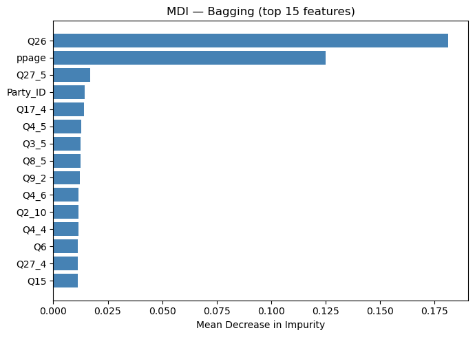
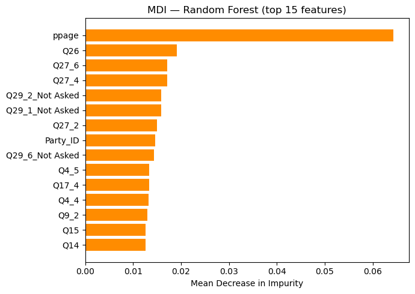

import pandas as pd
import numpy as np
import matplotlib.pyplot as plt
from sklearn.tree import DecisionTreeClassifier
from sklearn.ensemble import BaggingClassifier, RandomForestClassifier
from sklearn.linear_model import LogisticRegression
from sklearn.model_selection import train_test_split
from sklearn.preprocessing import OrdinalEncoder, OneHotEncoder
from sklearn.impute import SimpleImputer
from sklearn.compose import ColumnTransformer
from sklearn.pipeline import Pipeline
from sklearn.metrics import accuracy_score
from sklearn.inspection import permutation_importanceFeature Importance Practice: Voter Data
Dr. Eric Friedlander
Setup
Same voter data setup as notebooks 18 and 19.
# Load and clean
voter_url = 'https://raw.githubusercontent.com/fivethirtyeight/data/master/non-voters/nonvoters_data.csv'
voter_raw = pd.read_csv(voter_url)
voter_clean = voter_raw.drop(columns=['RespId', 'weight', 'Q1']).copy()
voter_clean['educ'] = pd.Categorical(voter_clean['educ'],
categories=['High school or less', 'Some college', 'College'], ordered=True)
voter_clean['income_cat'] = pd.Categorical(voter_clean['income_cat'],
categories=['Less than $40k', '$40-75k ', '$75-125k', '$125k or more'], ordered=True)
voter_clean['voter_category'] = pd.Categorical(voter_clean['voter_category'],
categories=['rarely/never', 'sporadic', 'always'], ordered=False)
voter_clean = voter_clean[voter_clean['Q22'] != 5].copy()
voter_clean['Q22'] = voter_clean['Q22'].fillna('Not Asked').astype(str)
for c in [f'Q28_{i}' for i in range(1, 9)]:
voter_clean[c] = voter_clean[c].replace(-1.0, 0).fillna('Not Asked').astype(str)
for c in [f'Q29_{i}' for i in range(1, 11)]:
voter_clean[c] = voter_clean[c].replace(-1.0, 0).fillna('Not Asked').astype(str)
def _party_id(row):
q31, q32, q33 = row['Q31'], row['Q32'], row['Q33']
if q31 == 1: return 'Strong Republican'
elif q31 == 2: return 'Republican'
elif q32 == 1: return 'Strong Democrat'
elif q32 == 2: return 'Democrat'
elif q33 == 1: return 'Lean Republican'
elif q33 == 2: return 'Lean Democrat'
else: return 'Other'
voter_clean['Party_ID'] = voter_clean.apply(_party_id, axis=1)
party_order = ['Strong Republican', 'Republican', 'Lean Republican',
'Other', 'Lean Democrat', 'Democrat', 'Strong Democrat']
voter_clean['Party_ID'] = pd.Categorical(voter_clean['Party_ID'],
categories=party_order, ordered=True)
voter_clean = voter_clean.drop(columns=['Q31', 'Q32', 'Q33'])
for c in voter_clean.columns:
if c != 'ppage' and voter_clean[c].dtype in ['float64', 'int64']:
voter_clean[c] = voter_clean[c].replace(-1, np.nan)
X_voter = voter_clean.drop(columns=['voter_category'])
y_voter = voter_clean['voter_category']
X_train, X_test, y_train, y_test = train_test_split(
X_voter, y_voter, test_size=0.3, stratify=y_voter, random_state=4025)
ordered_cat_cols = ['educ', 'income_cat', 'Party_ID']
num_cols = X_train.select_dtypes(include=['int64', 'float64']).columns.tolist()
nom_cols = [c for c in X_train.columns
if c not in ordered_cat_cols and c not in num_cols]
preproc_voter = ColumnTransformer([
('num', Pipeline([('impute', SimpleImputer(strategy='median'))]), num_cols),
('ord', Pipeline([
('impute', SimpleImputer(strategy='most_frequent')),
('encode', OrdinalEncoder(handle_unknown='use_encoded_value', unknown_value=-1))
]), ordered_cat_cols),
('nom', Pipeline([
('impute', SimpleImputer(strategy='most_frequent')),
('encode', OneHotEncoder(drop='first', sparse_output=False, handle_unknown='ignore'))
]), nom_cols),
], remainder='drop')
print(f"Training: {X_train.shape[0]} obs | Test: {X_test.shape[0]} obs")Training: 4071 obs | Test: 1746 obsFit Models
Fit three models: Bagging, Random Forest (with max_features='sqrt'), and Logistic Regression. All use the same preprocessing pipeline.
# Bagging
bag_pipe = Pipeline([
('preproc', preproc_voter),
('bag', BaggingClassifier(
estimator=DecisionTreeClassifier(random_state=4025),
n_estimators=200, oob_score=True, random_state=4025, n_jobs=-1
))
])
bag_pipe.fit(X_train, y_train)
# Random Forest
rf_pipe = Pipeline([
('preproc', preproc_voter),
('rf', RandomForestClassifier(
n_estimators=200, max_features='sqrt', random_state=4025, n_jobs=-1
))
])
rf_pipe.fit(X_train, y_train)
# Logistic Regression
lr_pipe = Pipeline([
('preproc', preproc_voter),
('lr', LogisticRegression(max_iter=1000, random_state=4025))
])
lr_pipe.fit(X_train, y_train)
for name, pipe in [('Bagging', bag_pipe), ('Random Forest', rf_pipe), ('Logistic Reg.', lr_pipe)]:
print(f"{name:15s} test acc = {accuracy_score(y_test, pipe.predict(X_test)):.3f}")Bagging test acc = 0.643
Random Forest test acc = 0.625
Logistic Reg. test acc = 0.584Helper: Get Feature Names
Build the full list of feature names after preprocessing — used for all importance plots.
def get_feature_names(pipe):
enc = pipe.named_steps['preproc'].named_transformers_['nom'].named_steps['encode']
return num_cols + ordered_cat_cols + list(enc.get_feature_names_out(nom_cols))
feature_names = get_feature_names(bag_pipe) # same for all three pipes
print(f"{len(feature_names)} features after encoding")139 features after encodingMDI: Mean Decrease in Impurity
MDI is built into tree-based models. It measures how much each feature reduces node impurity across all splits and all trees.
MDI: Bagging
For BaggingClassifier, we average feature_importances_ manually across all trees.
bag_mdi = np.mean([t.feature_importances_
for t in bag_pipe.named_steps['bag'].estimators_], axis=0)
imp_bag = (pd.DataFrame({'feature': feature_names, 'importance': bag_mdi})
.sort_values('importance', ascending=False).head(15))
fig, ax = plt.subplots(figsize=(7, 5))
ax.barh(imp_bag['feature'][::-1], imp_bag['importance'][::-1], color='steelblue')
ax.set_xlabel('Mean Decrease in Impurity')
ax.set_title('MDI — Bagging (top 15 features)')
plt.tight_layout()
plt.show()
MDI: Random Forest
RandomForestClassifier stores the aggregated importances directly — no manual averaging needed.
rf_mdi = rf_pipe.named_steps['rf'].feature_importances_
imp_rf = (pd.DataFrame({'feature': feature_names, 'importance': rf_mdi})
.sort_values('importance', ascending=False).head(15))
fig, ax = plt.subplots(figsize=(7, 5))
ax.barh(imp_rf['feature'][::-1], imp_rf['importance'][::-1], color='darkorange')
ax.set_xlabel('Mean Decrease in Impurity')
ax.set_title('MDI — Random Forest (top 15 features)')
plt.tight_layout()
plt.show()
Permutation Importance
Permutation importance works with any model. For each feature: 1. Shuffle that feature’s values in the test set 2. Measure the drop in accuracy compared to the unshuffled baseline 3. Repeat n_repeats times and average
A large drop means the model relied heavily on that feature. Features with near-zero or negative drops are not contributing.
Permutation Importance: Bagging
perm_bag = permutation_importance(
bag_pipe, X_test, y_test,
n_repeats=10, random_state=4025, n_jobs=-1
)
perm_bag_df = (pd.DataFrame({
'feature': feature_names,
'mean': perm_bag.importances_mean,
'std': perm_bag.importances_std
}).sort_values('mean', ascending=False).head(15))
fig, ax = plt.subplots(figsize=(7, 5))
ax.barh(perm_bag_df['feature'][::-1], perm_bag_df['mean'][::-1],
xerr=perm_bag_df['std'][::-1], color='steelblue', capsize=3)
ax.axvline(0, color='black', linewidth=0.8)
ax.set_xlabel('Mean Accuracy Drop (± 1 SD)')
ax.set_title('Permutation Importance — Bagging (top 15)')
plt.tight_layout()
plt.show()--------------------------------------------------------------------------- ValueError Traceback (most recent call last) Cell In[10], line 6 1 perm_bag = permutation_importance( 2 bag_pipe, X_test, y_test, 3 n_repeats=10, random_state=4025, n_jobs=-1 4 ) ----> 6 perm_bag_df = (pd.DataFrame({ 7 'feature': feature_names, 8 'mean': perm_bag.importances_mean, 9 'std': perm_bag.importances_std 10 }).sort_values('mean', ascending=False).head(15)) 12 fig, ax = plt.subplots(figsize=(7, 5)) 13 ax.barh(perm_bag_df['feature'][::-1], perm_bag_df['mean'][::-1], 14 xerr=perm_bag_df['std'][::-1], color='steelblue', capsize=3) File ~/miniforge3/envs/math-4025-sp26/lib/python3.14/site-packages/pandas/core/frame.py:769, in DataFrame.__init__(self, data, index, columns, dtype, copy) 763 mgr = self._init_mgr( 764 data, axes={"index": index, "columns": columns}, dtype=dtype, copy=copy 765 ) 767 elif isinstance(data, dict): 768 # GH#38939 de facto copy defaults to False only in non-dict cases --> 769 mgr = dict_to_mgr(data, index, columns, dtype=dtype, copy=copy) 770 elif isinstance(data, ma.MaskedArray): 771 from numpy.ma import mrecords File ~/miniforge3/envs/math-4025-sp26/lib/python3.14/site-packages/pandas/core/internals/construction.py:447, in dict_to_mgr(data, index, columns, dtype, copy) 428 if copy: 429 # We only need to copy arrays that will not get consolidated, i.e. 430 # only EA arrays 431 arrays = [ 432 ( 433 x.copy() (...) 444 for x in arrays 445 ] --> 447 return arrays_to_mgr(arrays, columns, index, dtype=dtype, consolidate=copy) File ~/miniforge3/envs/math-4025-sp26/lib/python3.14/site-packages/pandas/core/internals/construction.py:112, in arrays_to_mgr(arrays, columns, index, dtype, verify_integrity, consolidate) 109 if verify_integrity: 110 # figure out the index, if necessary 111 if index is None: --> 112 index = _extract_index(arrays) 113 else: 114 index = ensure_index(index) File ~/miniforge3/envs/math-4025-sp26/lib/python3.14/site-packages/pandas/core/internals/construction.py:620, in _extract_index(data) 618 if have_raw_arrays: 619 if len(raw_lengths) > 1: --> 620 raise ValueError("All arrays must be of the same length") 622 if have_dicts: 623 raise ValueError( 624 "Mixing dicts with non-Series may lead to ambiguous ordering." 625 ) ValueError: All arrays must be of the same length
Permutation Importance: Random Forest
perm_rf = permutation_importance(
rf_pipe, X_test, y_test,
n_repeats=10, random_state=4025, n_jobs=-1
)
perm_rf_df = (pd.DataFrame({
'feature': feature_names,
'mean': perm_rf.importances_mean,
'std': perm_rf.importances_std
}).sort_values('mean', ascending=False).head(15))
fig, ax = plt.subplots(figsize=(7, 5))
ax.barh(perm_rf_df['feature'][::-1], perm_rf_df['mean'][::-1],
xerr=perm_rf_df['std'][::-1], color='darkorange', capsize=3)
ax.axvline(0, color='black', linewidth=0.8)
ax.set_xlabel('Mean Accuracy Drop (± 1 SD)')
ax.set_title('Permutation Importance — Random Forest (top 15)')
plt.tight_layout()
plt.show()Permutation Importance: Logistic Regression
Logistic Regression has no feature_importances_ attribute, so permutation importance is the natural way to assess which features matter.
perm_lr = permutation_importance(
lr_pipe, X_test, y_test,
n_repeats=10, random_state=4025, n_jobs=-1
)
perm_lr_df = (pd.DataFrame({
'feature': feature_names,
'mean': perm_lr.importances_mean,
'std': perm_lr.importances_std
}).sort_values('mean', ascending=False).head(15))
fig, ax = plt.subplots(figsize=(7, 5))
ax.barh(perm_lr_df['feature'][::-1], perm_lr_df['mean'][::-1],
xerr=perm_lr_df['std'][::-1], color='seagreen', capsize=3)
ax.axvline(0, color='black', linewidth=0.8)
ax.set_xlabel('Mean Accuracy Drop (± 1 SD)')
ax.set_title('Permutation Importance — Logistic Regression (top 15)')
plt.tight_layout()
plt.show()Comparison: Top Features Across Models
Rank each feature by its permutation importance, then compare ranks across all three models. Features that rank highly across all models are more trustworthy signals.
top_n = 12
# Union of top features from all three permutation results
top_features = list(dict.fromkeys(
list(perm_bag_df['feature'].head(top_n)) +
list(perm_rf_df['feature'].head(top_n)) +
list(perm_lr_df['feature'].head(top_n))
))
def perm_means(perm_result):
return dict(zip(feature_names, perm_result.importances_mean))
bag_means = perm_means(perm_bag)
rf_means = perm_means(perm_rf)
lr_means = perm_means(perm_lr)
compare_df = pd.DataFrame({
'feature': top_features,
'Bagging': [bag_means[f] for f in top_features],
'Random Forest': [rf_means[f] for f in top_features],
'Logistic Reg.': [lr_means[f] for f in top_features],
}).set_index('feature').sort_values('Random Forest', ascending=False)
fig, ax = plt.subplots(figsize=(9, 6))
x = np.arange(len(compare_df))
w = 0.25
ax.barh(x - w, compare_df['Bagging'], w, label='Bagging', color='steelblue')
ax.barh(x, compare_df['Random Forest'], w, label='Random Forest', color='darkorange')
ax.barh(x + w, compare_df['Logistic Reg.'], w, label='Logistic Reg.', color='seagreen')
ax.set_yticks(x)
ax.set_yticklabels(compare_df.index)
ax.axvline(0, color='black', linewidth=0.8)
ax.set_xlabel('Mean Accuracy Drop (Permutation Importance)')
ax.set_title('Feature Importance Comparison Across Models')
ax.legend()
plt.tight_layout()
plt.show()